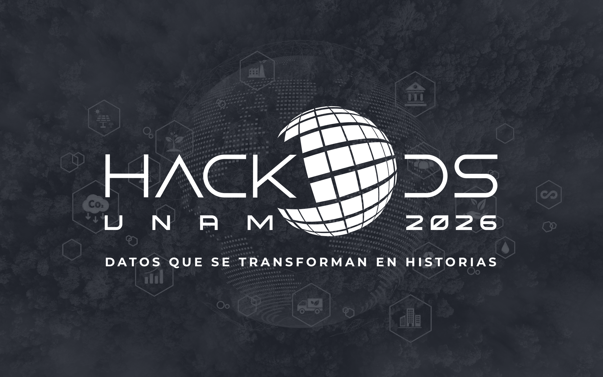

HackODS es …
El primer hackatón de la UNAM para transformar datos abiertos en soluciones sostenibles. Es una experiencia única de innovación y colaboración universitaria que busca convertir los desafíos de los Objetivos de Desarrollo Sostenible (ODS) en narrativas visuales accesibles, usando herramientas tecnológicas de código abierto y datos públicos. Durante varias etapas de formación, mentoría y creación, equipos multidisciplinarios diseñarán tableros interactivos que visibilicen el progreso (o retroceso) de México en el cumplimiento de los ODS.
Si te apasionan los datos, las visualizaciones, el desarrollo sostenible y te interesa poner tu talento al servicio de las grandes causas del país… ¡El HackODS UNAM 2026 es para ti!
Convocatoria
Objetivo General
Impulsar la creación de tableros interactivos e historias visuales basadas en datos abiertos, que promuevan soluciones informadas e innovadoras para los retos del desarrollo sostenible en México.
Objetivos Específicos
- Fomentar el pensamiento crítico y creativo a través del análisis y visualización de datos.
- Potenciar el uso de tecnologías abiertas para el bien común.
- Generar redes de colaboración entre estudiantes de distintas disciplinas.
- Visibilizar las brechas y avances en torno a los ODS a nivel nacional y regional.
Bases de Participación
1) ¿Quiénes pueden participar?
- Estudiantes con inscripción vigente en licenciatura, maestría o doctorado de cualquier institución educativa mexicana.
- Equipos de tres integrantes como máximo, con al menos un hombre y una mujer.
- Se recomienda la integración de equipos multidisciplinarios (por ejemplo: ingeniería, ciencias sociales, diseño, matemáticas, comunicación).
2) Registro
- Llena el formulario en: [XXX]
- Adjunta comprobante de inscripción vigente de cada integrante.
- Cuota de recuperación: $500 MXN por equipo (transferencia bancaria o plataforma indicada).
3) Categoría
- Categoría única: Todos los equipos competirán bajo los mismos criterios de evaluación.
Cronograma General
| Evento | Fecha | Detalles |
|---|---|---|
| Publicación de la convocatoria y apertura registro | 12 de enero de 2026 | Disponible en [Agregar sitio web oficial] |
| Evento híbrido transmitido y formación de equipos | 5 de febrero de 2026 | Sede: [Agregar sede] – Horario: [Agregar hora] |
| Cierre del registro | 13 de febrero de 2026 | Hora límite: 18:00 h |
| Capacitación y mentorías | 16 de febrero – mayo | Talleres en línea: ODS, datos abiertos, UX/UI |
| Evento final y premiación | 25 y 26 de junio de 2026 | Presentación y evaluación de proyectos |
Criterios de Evaluación
Los proyectos serán evaluados por un jurado experto con base en los siguientes rubros:
- Calidad técnica: uso correcto y eficaz de herramientas y datos.
- Creatividad: originalidad en la visualización y narrativa.
- Impacto: relevancia del tablero para visibilizar problemáticas reales.
- Accesibilidad y diseño: claridad, inclusión y facilidad de interpretación.
Premios
- 1er. lugar: Tres laptops Dell XPS 13 (valor aproximado $25,000 MXN c/u).
- 2do. lugar: Tres kits Raspberry Pi Modelo 5, 8GB RAM.
- 3er. lugar: Tres Chromebooks Acer Spin 311.
Además:
- Publicación de proyectos destacados en los portales oficiales de la UNAM.
- Constancias de participación para todos los equipos finalistas.
Jurado (por anunciar)
Integrantes (PA):
- [Por anunciar]
- [Por anunciar]
- [Por anunciar]
El fallo del jurado será definitivo e inapelable.
Motivos de Descalificación
- Incumplimiento de los requisitos establecidos en la convocatoria.
- Plagio o uso indebido de datos no verificados.
- Conductas contrarias a la ética (discriminación, fraude, etc.).
- Inasistencia injustificada al evento final.
Premiación
20–21 de noviembre de 2025
Sede: Auditorio del Instituto de Geofísica, CU
Requisitos:
- Presentar identificación oficial (INE, pasaporte o credencial de estudiante vigente).
- Asistir personalmente o con representante designado.
Llamado a la Acción
¡Haz que los datos hablen!
Transforma estadísticas en soluciones, conecta ideas y crea impacto real.
Inscríbete y sé parte del cambio. → Ir al registro
Organizadores


Contacto
¿Tienes dudas o necesitas apoyo técnico?
👉 Escríbenos a hackods@ier.unam.mx
¡Síguenos en redes!
@HackODS_UNAM en Twitter e Instagram.